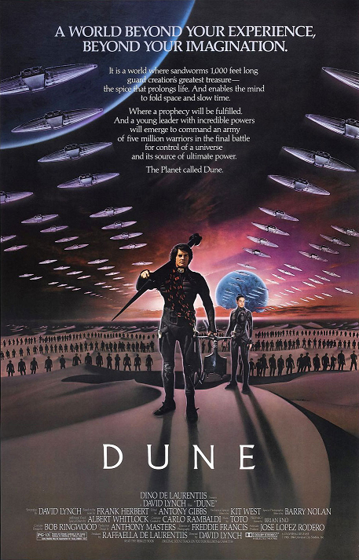

Dune es una novela épica de ciencia ficción escrita por Frank Herbert en 1965. Su éxito fue rotundo; en el año de su salida. Publicada en español por la editorial Acervo en 1975, abrió una de las sagas más importantes de la literatura fantástica y de ciencia ficción. En 2007 registró ventas de más 12 millones de ejemplares, convirtiéndola en la novela de ciencia ficción más vendida a la fecha.
Posteriormente el autor continuaría la saga con El mesías de Dune (1969) y la concluyó con Hijos de Dune (1976), que cerraba la trilogía prevista. El éxito de la trilogía lo llevó sin embargo a escribir posteriormente un cuarto libro, Dios emperador de Dune (1981). Años después retomaría la saga con el quinto y sexto volumen, Herejes de Dune (1984) y Casa Capitular Dune (1985) respectivamente, dejando un final completamente abierto a una nueva entrega.
Peliculas
"Dune" de 1984 dirigida por David Lynch, es una adaptación cinematográfica de la famosa novela de ciencia ficción del mismo nombre escrita por Frank Herbert. La trama sigue a Paul Atreides, un joven noble cuya familia es asignada para gobernar el peligroso planeta desértico de Arrakis, también conocido como Dune. Arrakis es la única fuente conocida de la valiosa especia melange, y su control es codiciado por varias facciones políticas.
Paul se ve envuelto en una trama de intriga política, traición y confrontación con los nativos del planeta, los Fremen. A medida que descubre sus habilidades latentes y su conexión con los Fremen y el destino de Arrakis, Paul se convierte en un líder legendario conocido como Muad'Dib.
La película captura la riqueza del universo de "Dune", con sus paisajes desérticos, intrincadas relaciones políticas y misteriosas fuerzas cósmicas. Aunque la película recibió críticas mixtas en su lanzamiento, sigue siendo una adaptación cinematográfica icónica y ha ganado un estatus de culto entre los fanáticos de la ciencia ficción.
"Dune" de 2021 dirigida por Denis Villeneuve, es una adaptación cinematográfica de la primera mitad de la famosa novela de ciencia ficción del mismo nombre escrita por Frank Herbert. La trama sigue a Paul Atreides, interpretado por Timothée Chalamet, un joven noble cuya familia es asignada para gobernar el peligroso planeta desértico de Arrakis, también conocido como Dune. Arrakis es la única fuente conocida de la valiosa especia melange, y su control es codiciado por varias facciones políticas.
A medida que la familia Atreides se asienta en Arrakis, Paul se ve envuelto en una trama de intriga política, traición y confrontación con los nativos del planeta, los Fremen. A medida que descubre sus habilidades latentes y su conexión con los Fremen y el destino de Arrakis, Paul se convierte en un líder legendario conocido como Muad'Dib.
La película captura la riqueza del universo de "Dune" con impresionantes paisajes desérticos, una impresionante banda sonora y efectos visuales impresionantes. Aunque la película solo abarca la primera parte de la novela, ha sido elogiada tanto por su fidelidad al material original como por su ambición cinematográfica.
"Dune 2" de 2024 dirigida por Denis Villeneuve, explorará el viaje mítico de Paul Atreides mientras se une a Chani y los Fremen en una guerra de venganza contra los conspiradores que destruyeron su familia. Al enfrentarse a una elección entre el amor de su vida y el destino del universo conocido, se esfuerza por evitar un futuro terrible que solo él puede prever”. Puede parecer mucha trama, pero la película no escatimará en tiempo: tendremos 166 minutos para degustar este viaje de Atreides.
Dune' termina cuando Paul se une oficialmente a los Fremen y planea traer la paz a Arrakis. La película se va al negro cuando Paul y su madre Lady Jessica (Rebecca Ferguson) viajan con los Fremen a su ciudad natal. Paul ve a un miembro Fremen montado en un gusano de arena. Los fans definitivamente pueden esperar ver a Chalamet montando un gusano de arena en 'Dune: Part Two', pero ¿Qué más les espera? Mucho, en realidad.
Si algunos espectadores pensaron que la primera película tenía mucha trama, que esperen a ver toda la trama está por venir en 'Dune: Part Two'. La narrativa principal de la continuación seguirá el ascenso de Paul al poder entre los Fremen y la rebelión resultante contra el emperador Padishah Shaddam IV. El último personaje, mencionado solo en su nombre en la Primera parte, será quizás el nuevo papel más importante de la secuela.
